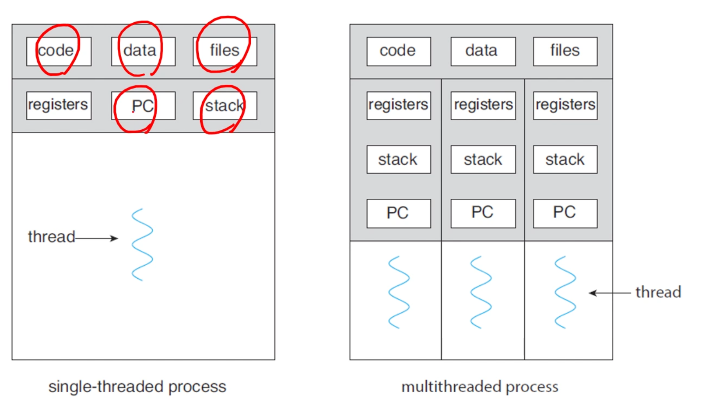
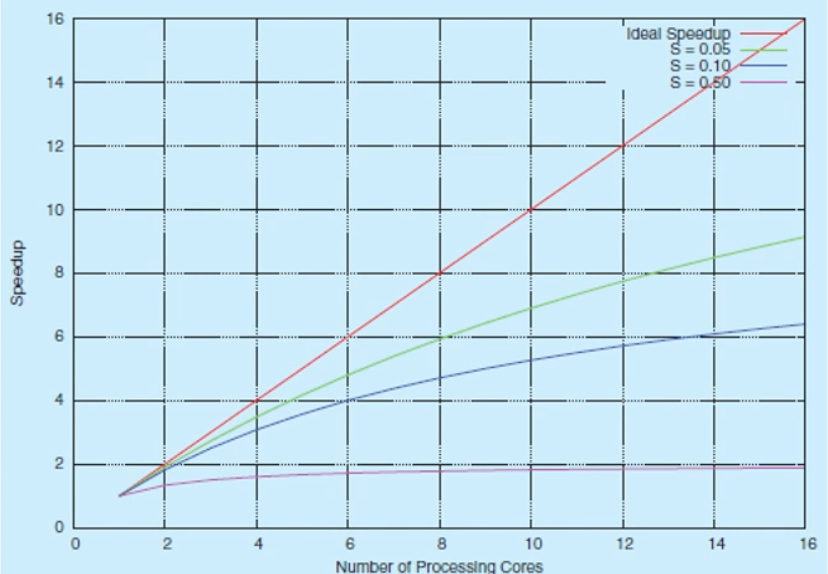
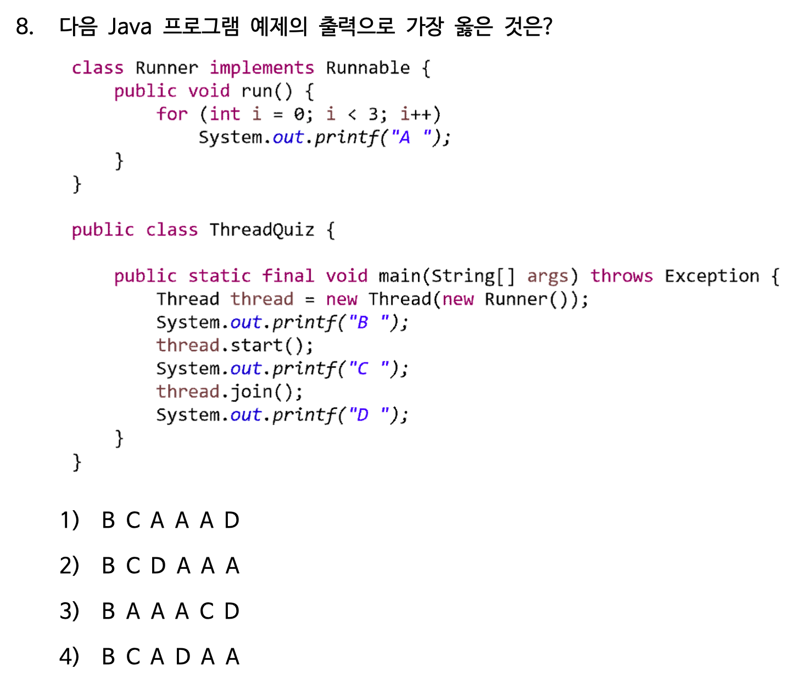

지금까지는 single thread of control인 프로세스들을 살펴봄. 하지만 multiple threads of control을 가질 수 있다. PC를 잘 바꾸면 같은 프로그램 내에서도 여러 context의 코드를 실행할 수 있다.
A thread is a lightweight process(LWP). A basic unit of CPU utilization.
으로 구성된다.

client-server 시스템에서 여러 request를 함께 처리할 수 있다.
자바에서 쓰레드는 프로그램 실행의 기본적인 모델이다. 쓰레드 생성과 관리를 위한 많은 기능들이 있음.
Inheritance from the Thread class - 다른 클래스 상속이 안되는 문제. 다른 방법 쓰기
public class MyThread1 extends Thread {
public void run() {
try {
while (true) {
System.out.println("Hello, Thread!");
Thread.sleep(500);
}
} catch (InterruptedException ie) {
System.out.println("I'm interuppted");
}
}
}
public class testcode {
public static final void main(String[] args) {
MyThread1 thread = new MyThread1();
thread.start();
System.out.print("Hello, My Child!");
}
}
Implementing the Runnable interface - 제일 많이 씀.
public class MyThread2 implements Runnable {
public void run() {
try {
while (true) {
System.out.println("Hello, Runnable!");
Thread.sleep(500);
}
} catch (InterruptedException ie) {
System.out.println("I'm interrupted");
}
}
}
public class testcode {
public static final void main(String[] args) {
Thread thread = new Thread(new MyThread2());
thread.start();
System.out.print("Hello, My Runnable Child!");
}
}
Using the Lambda expressing(1.8~) - 새로운 클래스도 귀찮고, 람다로 구현
public class testcode {
public static final void main(String[] args) {
Runnable task = () -> {
try {
while (true) {
System.out.println("Hello, Lambda Runnable!");
Thread.sleep(500);
}
} catch (InterruptedException ie) {
System.out.println("I'm interrupted");
}
};
Thread thread = new Thread(task);
thread.start();
System.out.println("Hello, My Lambda Child!");
}
}
부모 쓰레드의 대기: Join
public class testcode {
public static final void main(String[] args) {
Runnable task = () -> {
for (int i = 0; i < 5; i++) {
System.out.println("Hello, Lambda Runnable!");
}
};
Thread thread = new Thread(task);
thread.start();
try {
thread.join();
} catch (InterruptedException ie) {
System.out.println("Parent thread is interrupted");
}
System.out.println("Hello, My Joined Child!");
}
}
쓰레드의 종료: interrupt
public class testcode {
public static final void main(String[] args) throws InterruptedException {
Runnable task = () -> {
try {
while (true) {
System.out.println("Hello, Lambda Runnable!");
Thread.sleep(100);
}
} catch (InterruptedException ie) {
System.out.println("I'm interupted");
}
};
Thread thread = new Thread(task);
thread.start();
Thread.sleep(500);
thread.interrupt();
System.out.println("Hello, My Interrupted Child!");
}
}
프로그램은 짤 줄은 몰라도 6, 7장 동기화 부분에서 자바로 설명하니까 코드는 얼추 알아두기~
More efficient use of multiple cores for improved concurrency
싱글코어에서는 사이사이 interleaved되겠지만, 멀티코어에서는 몇몇 쓰레드들은 parallel하게 작동할 수 있다.
Programming Challenge

user thread / kernel thread
이 둘의 관계
쓰레드 라이브러리는 쓰레드를 만들고 관리하는 API이다.
An application programming interface (API) is a connection between computers or between computer programs. It is a type of software interface, offering a service to other pieces of software.
The interface to a software library is one type of API. The API describes and prescribes the "expected behavior" (a specification) while the library is an "actual implementation" of this set of rules.
In computing, an interface is a shared boundary across which two or more separate components of a computer system exchange information.
POSIX Pthreads, Windows thread, Java thread(얘네는 운영체제꺼 끌어다? 씀)
#include <stdio.h>
#include <stdlib.h>
#include <pthread.h>
// data shared by the threads
int sum;
// thread call this function
void *runner(void *param);
int main(int argc, char *argv[])
{
pthread_t tid; // thread identifier
pthread_attr_t attr; // thread attributes;
pthread_attr_init(&attr);
pthread_create(&tid, &attr, runner, argv[1]);
pthread_join(tid, NULL);
printf("sum = %d\n", sum);
}
void *runner(void *param)
{
int upper = atoi(param);
sum = 0;
for (int i = 1; i <= upper; i++)
sum += i;
pthread_exit(0);
}
-pthread 옵션 안줘도 작동하긴 함
main thread는 기본으로 있는듯!
알아서 쓰레딩 해줘~
The design of concurrent and parallel applications
So, transfer the difficulty to compiler and run-time libraries.
네가지 접근법
OpenMP: parallel region만 지정해주면 코드블럭을 알아서 parallel하게 실행해줌. 지금까지와는 달리 라이브러리가 아닌 컴파일러에게 지시.
#include <stdio.h>
#include <omp.h>
#define SIZE 100000000
int a[SIZE], b[SIZE], c[SIZE]
int main()
{
for (i = 0; i < SIZE; i++)
{
a[i] = b[i] = i;
}
#pragma omp parallel for
for (i = 0; i < SIZE; i++)
{
c[i] = a[i] + b[i];
}
return 0;
}
이건 테스트는 못해봄. macOS에 기본적으로 안깔려져있음
여러번 실행됨! 병렬이라서. omp_set_num_threads(4);, omp_get_thread_num? 도 사용할 수 있음. time 써서 시간 측정해보면 병렬처리를 위한 대기 등때문에 user가 긺.
1 2 (2, 3) 2 3 4 2 3
#include <stdio.h>
#include <stdlib.h>
#include <pthread.h>
#include <unistd.h>
void runner()
{
printf("Hello I'm thread\n");
pthread_exit(0);
}
int main()
{
pthread_t tid; // thread identifier
pthread_attr_t attr; // thread attributes;
pthread_t tid2; // thread identifier
pthread_attr_init(&attr);
pthread_create(&tid, &attr, runner, NULL);
pthread_create(&tid2, &attr, runner, NULL);
fork();
pthread_join(tid, NULL);
pthread_join(tid2, NULL);
}
쓰레드도 같이 복사되는듯!

사실 start() 호출되었다고 바로 실행되는 구조가 아니다. 일단 먼저 '실행대기' 상태에 들어가게 되며 자신의 차례가 오면 실행되는 구조이다. 물론 실행대기 중인 쓰레드가 하나도 없다면 바로 실행 상태로 넘어간다. 참고: 쓰레드의 실행순서는 OS의 스케줄러가 작성한 스케줄에 의해 결정된다.
이거때문인가??